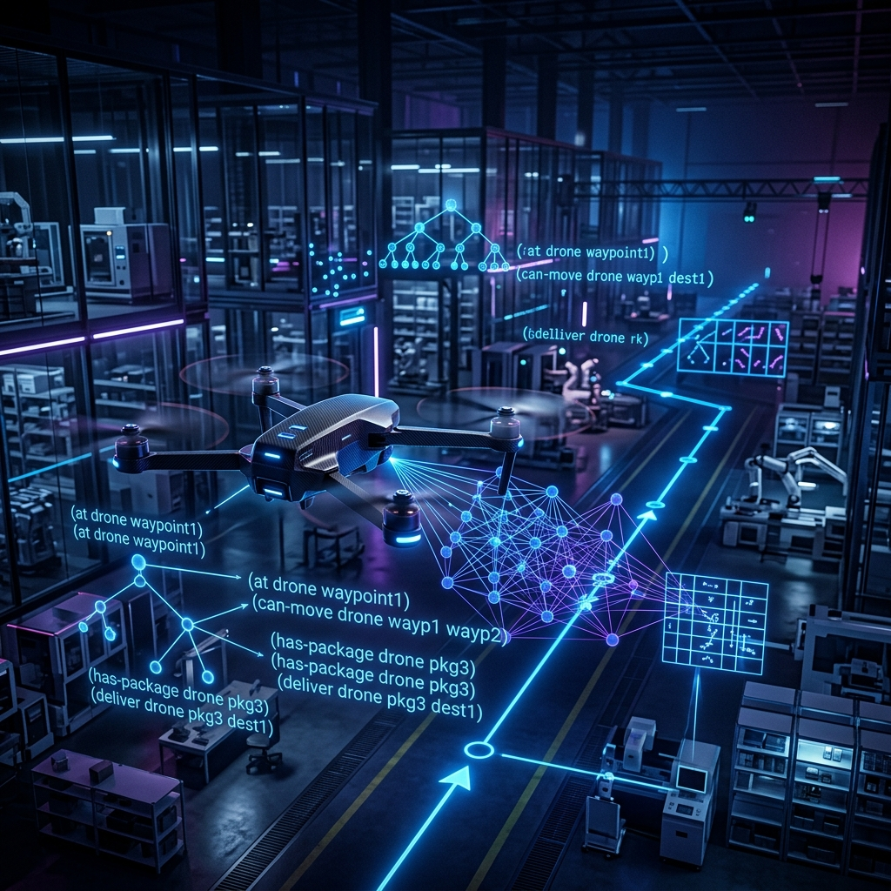
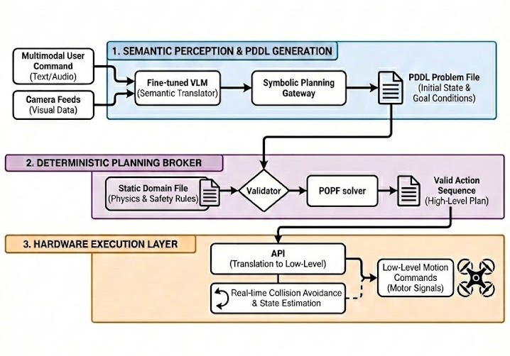

A hybrid neuro-symbolic architecture that gives autonomous drones
safety guarantees and natural language understanding.
The rapid progress of Large Language Models and Vision Language Models has introduced new paradigms for Human-Robot Interaction. While Vision Language Action models propose end-to-end control, they currently lack the safety guarantees and long-horizon reasoning required for collision-free operations in dynamic environments.
This thesis proposes a hybrid neuro-symbolic architecture that integrates the semantic perception of VLMs with the deterministic ability of classical automated planning. A fine-tuned VLM interprets natural language instructions and visual observations to generate a structured JSON payload, which a Symbolic Planning Gateway converts into a PDDL problem file. An independent planner then computes safe, collision-free trajectories for the UAV.
The system decouples perception from control — the VLM operates strictly as a semantic translator, while PDDL enforces immutable physics and safety constraints. Three VLM backends (Qwen2.5-VL-7B, Gemma3-4B, Moondream2) are evaluated in a Gazebo warehouse simulation across 70 test missions per model.
"Constraining a probabilistic generative model within a deterministic symbolic planning framework achieves near-perfect structural correctness and verifiable operational safety, while preserving natural language accessibility."
Direct Vision-Language-Action models suffer from fundamental safety and reliability gaps.
VLA models generate actions probabilistically — they cannot formally guarantee collision avoidance, altitude limits, or constraint adherence in safety-critical logistics environments.
Generative models routinely hallucinate object identities, spatial relationships, and action sequences. A 3-block sequential task achieves only 34% success; a 4-block variant drops to 0%.
Fine-tuning an end-to-end VLA model consumes 61.7 MJ and takes over 40 hours. A targeted neuro-symbolic model requires just 0.65 MJ and 34 minutes.
Autoregressive token generation lacks persistent backtracking and strict constraint enforcement needed for long multi-step mission sequences in complex dynamic environments.
VLA models degrade 21.2% under basic prompt attacks and 30.2% under perception attacks — natural lighting variation, typography overlays, and adversarial patches all exploit these weaknesses.
Decouple perception and control. Let the VLM see and describe — let PDDL plan and enforce. Combine the flexibility of neural models with the rigor of formal methods.
Each layer has a distinct responsibility, enabling modular development, testing, and replacement.

A fine-tuned VLM (Qwen2.5-VL, Gemma3, or Moondream2) receives the drone's front-facing camera image and a natural language instruction. Instead of generating PDDL directly, it populates a rigidly typed JSON schema: detected objects, their spatial coordinates, semantic properties, and the goal state.
The Symbolic Planning Gateway parses the JSON and converts it into a syntactically valid PDDL problem file. It validates all detected objects against the static domain registry — any hallucinated object or infeasible goal state is rejected before planning begins.
take_off (5s), fly_to_target (5s),
scan_target (4s), land (5s)The vpdroneparser.py node translates the symbolic plan into real-time motor control. It
subscribes to /drone/gt_pose for ground-truth state feedback and uses a proportional
velocity controller (Kp = 0.5) to navigate waypoints with a 0.3m arrival tolerance.
/drone/cmd_velremote_brain_node.py for human-in-the-loop approvalThree architectures spanning 1.86B to 7B parameters, each offering distinct speed-accuracy trade-offs.
Dynamic-resolution ViT backbone with Multimodal Rotary Position Embeddings (MRoPE). Processes images at native aspect ratios without distortion — ideal for spatial reasoning over FPV drone feeds.
Google's resource-efficient multimodal model with a SigLIP-based vision encoder and Pan & Scan adaptive cropping. Massive 128K token context window enables rich system prompting.
Ultra-compact VLM designed for edge deployment. SigLIP encoder with Phi-family transformer decoder. 4.12× faster than Gemma3, making it suitable for latency-critical single-target missions.
Prompted VLMs to directly output PDDL. Across 140 prompts, exact-match accuracy was consistently <1%. Even minor parenthesis or predicate errors cause solver rejection — probabilistic generation is incompatible with formal grammar.
QLoRA fine-tuning on 2,400 Blocksworld/Logistics/Gripper/Rover PDDL pairs using Unsloth toolkit. Significant improvement but still insufficient for safety-critical deployment.
VLM generates typed JSON, Symbolic Planning Gateway converts to PDDL. The typed schema absorbs syntactic complexity — even the smallest model achieves 92.86% semantic correctness.
70 end-to-end missions per VLM backend in a 30×30m Gazebo warehouse simulation.
| Action | Success Rate | Mean Execution Time | Mean Position Error |
|---|---|---|---|
take_off |
100% | 5.2 s | 0.08 m |
fly_to_target |
97.1% | 14.6 s | 0.21 m |
scan_target |
100% | 5.0 s | — |
land |
100% | 5.4 s | 0.05 m |
| Model | Semantic Correctness | Task Accuracy | Avg. Latency |
|---|---|---|---|
| Qwen2.5-VL-7B | 99.29% | 63.29% | 2.92 s |
| Gemma3-4B | 98.57% | 54.29% | 4.70 s |
| Moondream2 (2B) | 92.86% | 41.43% | 1.14 s |
✦ The PDDL gateway acted as a hard hallucination filter — no rejected mission ever reached the hardware layer. Zero execution-level safety violations across all 70 × 3 = 210 model-missions.
A high-fidelity 30×30m indoor logistics environment built on sjtu-drone and ROS2 Humble.
Parrot AR.Drone 2.0 model (1.477 kg) with URDF-defined kinematics, inertia tensors, and quadrotor dynamics simulation.
Five key research avenues to evolve the neuro-symbolic framework.
Collect real-world warehouse imagery and apply domain randomization (texture, lighting, noise) at the Gazebo level to bridge the synthetic-to-real perception gap before hardware deployment.
Evaluate Qwen2.5-VL-72B and closed-source multimodal models to determine whether the 63.3% task accuracy ceiling is model-capacity constrained or a fundamental JSON-grounding limit.
Extend POPF to multi-drone coordination using multi-agent PDDL extensions, enabling parallel inventory scanning across warehouse aisles with shared resource constraints.
Systematically compare the PDDL broker to a Model Context Protocol-based direct drone control approach across task accuracy, safety adherence, latency, and robustness to adversarial prompting.
Integrate a local reactive planner (DWA or OctoMap-based RRT) as a second safety layer that operates independently of the symbolic plan to handle dynamic obstacles like human workers.
Transition from simulation to physical Parrot AR.Drone using calibrated intrinsics/extrinsics, re-tuned Kp controller, and a real-time SLAM system to replace ground-truth pose feedback.
@mastersthesis{prabhu2026neurosymbolic,
author = {Pranav Sathish Prabhu},
title = {Integration of Structured Planning with Vision Language
Models for Physical Agents},
school = {Technische Universit{\"a}t Dortmund},
year = {2026},
type = {Masterarbeit},
note = {Lehrstuhl f{\"u}r F{\"o}rder- und Lagerwesen (FLW)}
}